Wycieczki szkolne
Nauka przez odkrywanie i doświadczanie. Każdy program to propozycja: zmieniamy go pod klasę, wiek uczniów, budżet i liczbę dni. Cenę przygotowujemy indywidualnie dla grupy.
Astronomiczna wycieczka
Obserwatorium Astronomiczne na Lubomirze w Beskidzie Średnim.
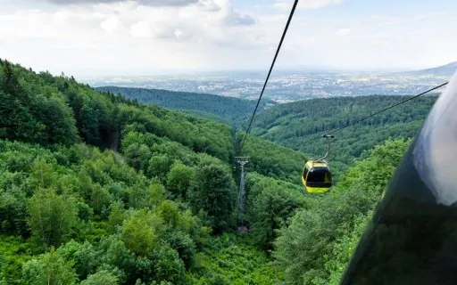
Beskid Śląski i Żywiecki
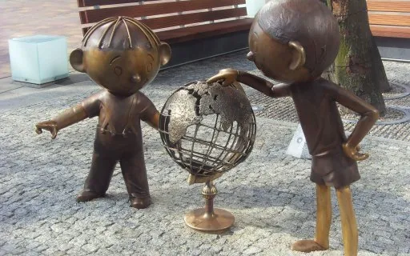
Bielsko-Biała, z wizytą u Bolka i Lolka
Miasto z filmową historią. Bolka i Lolka znają nawet dzieci XXI wieku.
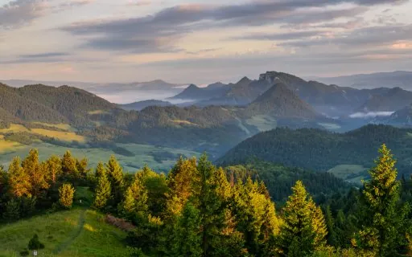
Górska przygoda w jeden dzień
Edukacja, integracja i zdobycie szczytu, zmęczenie i radość.
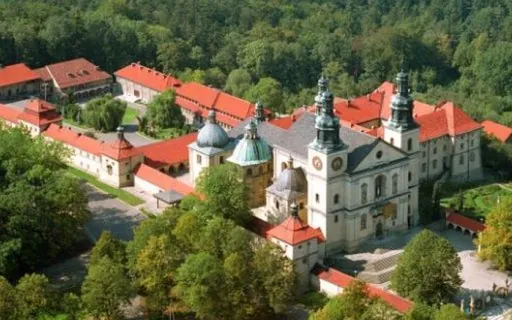
Kalwaria Zebrzydowska, Wadowice, Lanckorona
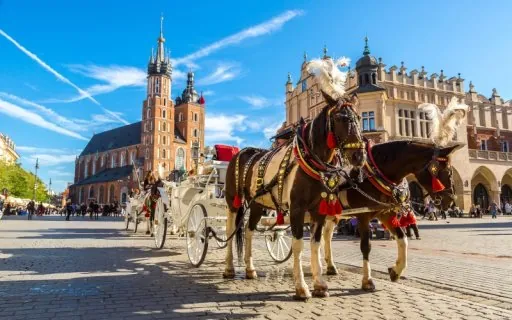
Kraków, wycieczki tematyczne
Program i cenę przygotowujemy indywidualnie dla grupy.
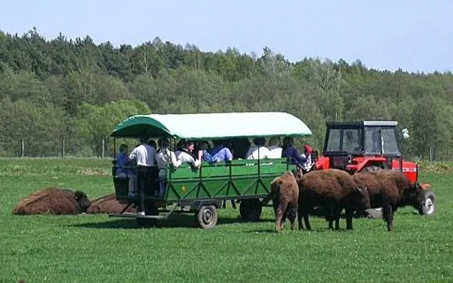
Kurozwęki
Pałac i park, zagroda bizonów, mini-zoo i stadnina koni arabskich.
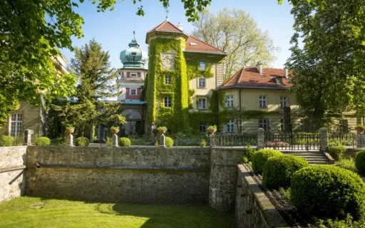
Łańcut, Dębno
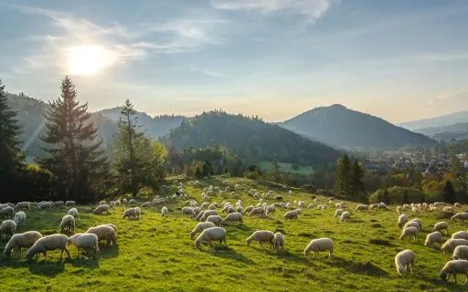
Małe Pieniny
Prosta wycieczka z Palenicy pod Durbaszkę, z widokiem na Beskidy i Tatry.
Ogrodzieniec, ruiny zamku i Park Rozrywki
Szlak Orlich Gniazd, Gród Królewski na Górze Birów i park rozrywki.
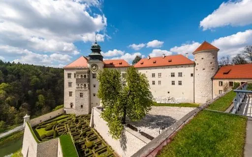
Ojcowski Park Narodowy
Najmniejszy, ale niezwykle urokliwy park narodowy w Polsce.
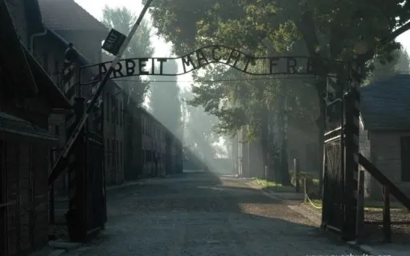
Oświęcim, Muzeum Auschwitz-Birkenau
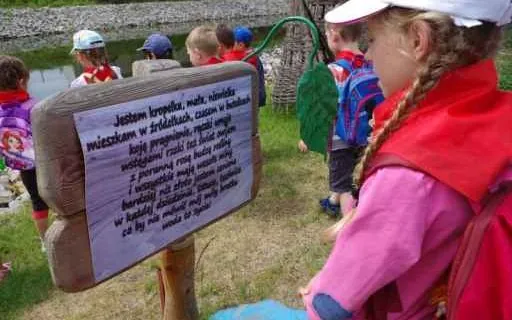
Pacanów, Centrum Bajki
Stolica Bajki: Koziołek Matołek i jego przyjaciele.
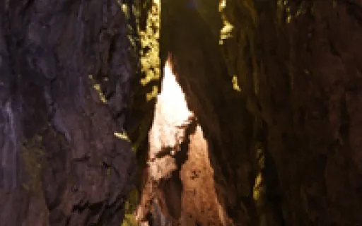
Piknik pod Jaskinią Wierzchowską
Dolina Kluczwody koło Krakowa.
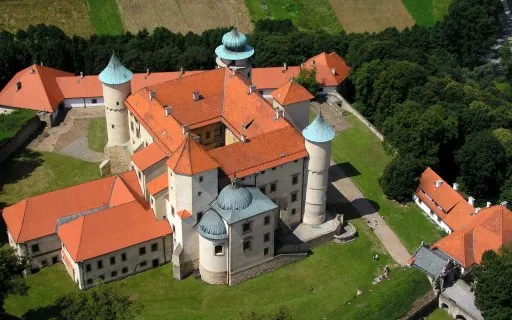
Pogórze Wiśnickie
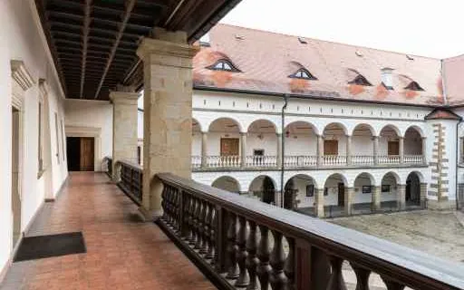
Puszcza Niepołomicka i Niepołomice
Zamek Królewski, Muzeum Fonografii i przejażdżka wozami taborowymi.
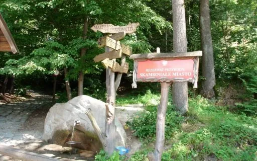
Skamieniałe Miasto, Ciężkowice
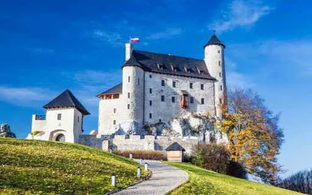
Szlakiem Orlich Gniazd
Malowniczy szlak na Jurze Krakowsko-Częstochowskiej.
Szlakiem św. Jana Pawła II
Rodzinne zakątki Karola Wojtyły i szlaki jego dzieciństwa.

Tatry Słowackie
Jaskinia, góry i schronisko, wszystko w jeden dzień.

Bieszczady, 3 dni
Połoniny, kolejka wąskotorowa, drezyny rowerowe i ikonopisarstwo.
Budapeszt, Esztergom, Szentendre
Buda i Peszt w pigułce oraz miasteczka w Zakolu Dunaju.
Praga, Morawski Kras
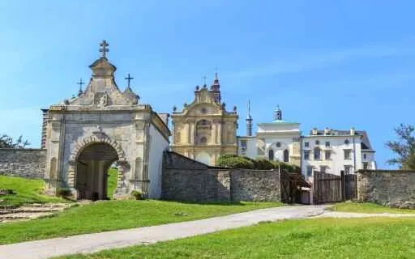
Góry Świętokrzyskie
Najstarsze góry w Polsce, niedaleko od Małopolski.
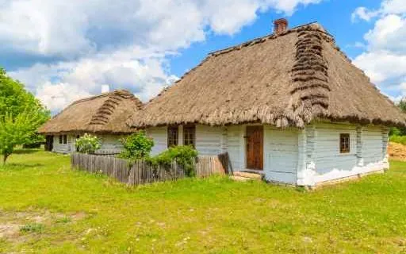
Góry Świętokrzyskie, wycieczka edukacyjna
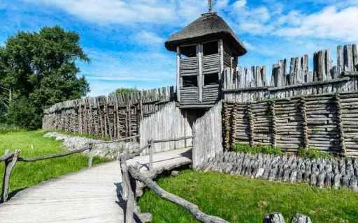
Szlak Piastowski
Miejsca związane z początkami Państwa Polskiego.

Trójmiasto
Gdańsk, Gdynia i Sopot. Na dłużej zielona szkoła na Kaszubach.
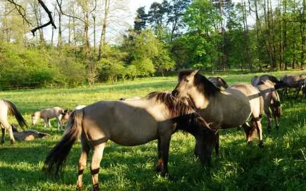
Zamość i Roztocze
W krainie konika polskiego: miasto idealne i szumy na rzece Szum.
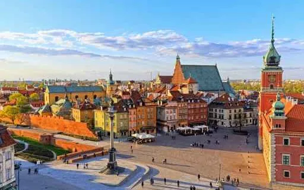
Warszawa
Przykładowy program 3-dniowy, który zmieniamy według oczekiwań.
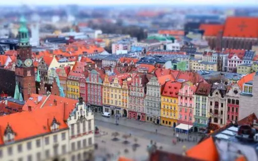
Wrocław
Panorama Racławicka, Hydropolis, Afrykarium, rejs po Odrze.

Zielona szkoła w Rabce-Zdroju
Program 4-dniowy, który skracamy albo rozbudowujemy.

Ziemia Kłodzka
Podziemne i skalne labirynty.
W podglądzie każda karta otwiera przykładową kartę wycieczki Bieszczady. W WordPressie każda wycieczka ma własną kartę, a kategorie i ich kolejność ustawia Pani w panelu.
Katalog wycieczek szkolnych
Przeglądaj katalog strona po stronie bezpośrednio tutaj, także na telefonie. Możesz go też pobrać i wydrukować dla rodziców albo rady pedagogicznej.
Podgląd: przykładowy plik złożony ze zdjęć z obecnej strony. W tym miejscu pojawi się Pani nowy katalog (bez dat i cen), podmieniany w panelu jednym plikiem PDF.
Nie widzisz swojego kierunku?
Napisz, dokąd i na ile dni chcecie pojechać. Przygotujemy program i wycenę dla Waszej klasy.